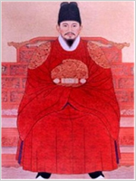

|
 |
무예를 사랑했던 사도세자의 피를 이어받은 정조 또한 문(文)과 무(武)를 겸전한 군주였다. 정조는 중국의 진시황과 한 문제를 문과 무를 양립하지 못한 사례로 들면서, 학문에 충실하였지만 무를 등한시하여 흉노의 침입을 받은 한 문제를 문치주의를 부정한 진시황보다 나을 것이 없다고 하였다. 정조의 신기에 가까운 활 솜씨는 익히 알려져 있다. 그는 종종 춘당대(春塘臺)에서 여러 신료들과 활쏘기를 하여 성적이 뛰어난 신하에겐 상을, 그렇지 않은 자에겐 벌을 내렸다. 득중정(得中亭)에서 신하들과 한 활쏘기에서 정조는 유엽전을 6순하여 30발 중 24발을 맞추는 등 신하들과는 큰 차이로 1등을 할 정도다.
사료에 따르면, 정조는 백발백중의 명궁이었지만, 일부러 신하들의 체면을 고려하여 1순(다섯 발) 중 한 발은 빗나가게 쏘았다고 한다. |
정약용의 『북영벌사기(北營罰射記)』에 보면, 당시 정조가 활을 제대로 못 쏜 신하들을 북영에 잡아 놓고 하루에 20순씩 연습하도록 한 정황이 자세히 기록되어 있다. 정약용은 정조에 의해 활쏘기를 강제로 배운 것을 매우 고맙게 여기며, 이후 활쏘기에 깊은 애정을 보인다.
정조는 활쏘기와 더불어 마음을 수양하는 방법으로 호흡법을 제시하였다. 호흡법은 도가(道家)에서는 양생의 방법으로, 무가(武家)에서는 공력을 기르는 방법으로 매우 중시하는 수련이다. 정조의 수상록인 『일득록(日得錄)』을 보면, 정조가 호흡법을 아주 중시했음을 알 수 있다. 정조는 이 책에서 호흡법, 즉 조식(調息)을 다음과 같이 소개하고 있다.
"조식은 반드시 먼저 정좌에 힘써야 한다. 정좌하면 마음이 깨끗해지고 정신이 즐거워진다. 즐거워지면 호흡이 자연스럽고 편안해진다. 들이마실 때에는 기가 위로부터 아래로 내려가고, 내뱉을 때에는 기가 아래로부터 위로 올라간다. 순환하여 오르락내리락 하면서도 조금의 흔적도 남지 않으면 사람이 진실로 병이 없게 되고 공력도 순수해진다."
이처럼 정조도 문과 무를 겸전한 군주였으며, 부군인 사도세자의 뜻을 이어받아 십팔기를 조선의 국기(國技)로서 확고한 체통을 세우고자 『무예도보통지』를 편찬하였으며, 이 책의 서문을 직접 적어 조선 무예 십팔기의 유래와 의의를 대내외에 당당히 선포한다.
|